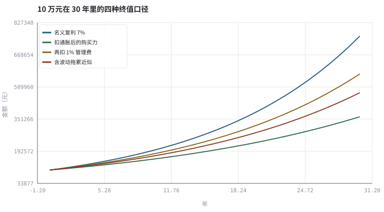

第 01 章货币时间价值：复利、通胀与实际收益
先把「赚钱」定义清楚：名义金额、购买力、扣费后金额，是三个不同的数。
本章位置：承接第 00 章的「收益分解」，把其中最容易确定的负项量化；下一章 第 02 章 · 收益与风险的可计算定义 给「风险」一个同样可计算的定义。
复利是 reduce(lambda v, r: v * (1+r), returns, V0)；通胀和费率是同一条折叠链上的负项。把它们写成逐期算子，而不是年底一次性减法，口径就不会错。
- 能区分名义收益、实际收益、税后收益与几何收益，并互相换算。
- 能解释波动拖累为何让算术均值高于长期几何收益。
- 能量化 1% 年费在 30 年里的复利侵蚀。
- 能用几行 Python 画出四种终值曲线并核对数值。
§知识点地图
每个知识点都配了 1～2 个扩展学习链接；本章完整资源清单见 扩展学习。
| # | 知识点 | 扩展学习 | 状态 |
|---|---|---|---|
| 1 | 复利与终值 | Compound interest · Volatility drag | 正文已覆盖 |
| 2 | 名义与实际收益 | Real interest rate · Inflation | 正文已覆盖 |
| 3 | 通胀与购买力 | Inflation · Real interest rate | 正文已覆盖 |
| 4 | 费率与复利侵蚀 | Compound interest · Volatility drag | 正文已覆盖 |
| 5 | 算术均值与几何均值 | Compound interest · Real interest rate | 正文已覆盖 |
| 6 | 波动拖累 | Normal distribution · Volatility drag | 正文已覆盖 |
| 7 | 年化与 CAGR | Rate of return · Compound interest | 正文已覆盖 |
| 8 | 对数收益 | Rate of return · Logarithmic return | 正文已覆盖 |
§1.1四个口径，少一个就会误判
V_T = V_0 · ∏(1 + r_t) | CAGR = (V_T / V_0)^(1/T) − 1
1 + r_实际 = (1 + r_名义) / (1 + π) − 1 ≈ r_名义 − π
交易 App 首页显示的通常是名义金额变动。若名义涨 7%、通胀 2.5%，实际购买力只涨约 4.4%；再扣 1% 管理费与申赎费，落到手里的又少一截。把口径写成一张表，是避免「赚了指数没赚钱」的第一步。
| 口径 | 定义 | 典型陷阱 |
|---|---|---|
| 简单收益 r | P_t / P_(t−1) − 1 | 多期不能相加 |
| 对数收益 | ln(P_t / P_(t−1)) | 跨期可加，但不能直接当账户收益率 |
| CAGR | 几何平均后的年化 | 与算术平均的差额随波动增大 |
| 实际收益 | 剔除通胀后的购买力变化 | 用减法只是近似，正确写法是除法 |
| 净收益 | 再扣管理费、交易成本与税 | 费率按资产规模逐期计提，是复利级损耗 |
§1.2波动拖累：算术均值不是你能拿到的收益
若单期收益独立且方差为 σ²，几何增长率的近似为
g ≈ μ − σ² / 2
其中 μ 是算术均值。波动本身会吃掉长期复利：同样 8% 的算术均值，σ=10% 时几何收益约 7.5%，σ=30% 时只剩约 3.5%。这解释了为什么「先翻倍再腰斩」回到原点，也解释了杠杆产品长期持有的衰减。第 30 章会把它写成仓位约束。
§1.3费率是唯一确定为正的「负 Alpha」
净值比 = [(1 + r − f) / (1 + r)]^T
费率 f 每期计提，作用方式与负复利完全相同。f=1.5%、r=7%、T=30 年时，终值大约只剩无费率情形的 65%——这不是省下一点小钱，而是把三分之一以上的终值让渡出去。评估基金时，费率、跟踪误差与换手成本应和收益一起看。
§Python 分析实例
实验 1-1 · 四种终值口径与费率侵蚀
#!/usr/bin/env python3
# -*- coding: utf-8 -*-
"""名义复利、扣通胀、扣费率、波动拖累四条曲线的对照，全部可手算核对。
数据为合成数据或模型示意，仅用于教学，不构成投资建议。
"""
from __future__ import annotations
import math
import pathlib
import random
import statistics
import sys
sys.path.insert(0, str(pathlib.Path(__file__).resolve().parents[3] / "tools"))
from chart import Chart, candlestick, heatmap, BLUE, RED, GREEN, AMBER
FIG = pathlib.Path(__file__).resolve().parents[1] / "fig"
FIG.mkdir(exist_ok=True)
random.seed(7)
# ---- 参数区 ----
YEARS = 30 # 投资年限
R_NOM = 0.07 # 名义年收益
INFL = 0.025 # 年通胀
FEE = 0.010 # 年管理费
SIGMA = 0.18 # 年化波动，用于波动拖累近似
V0 = 100000.0 # 初始本金
# ---- 计算与作图 ----
xs = list(range(YEARS + 1))
nominal = [V0 * (1 + R_NOM) ** t for t in xs]
real = [V0 * ((1 + R_NOM) / (1 + INFL)) ** t for t in xs]
after_fee = [V0 * (1 + R_NOM - FEE) ** t for t in xs]
drag = [V0 * (1 + R_NOM - SIGMA ** 2 / 2) ** t for t in xs]
r_real = (1 + R_NOM) / (1 + INFL) - 1
fee_loss = 1 - after_fee[-1] / nominal[-1]
c = Chart(FIG / "01-compound.svg", "10 万元在 30 年里的四种终值口径",
xlabel="年", ylabel="金额（元）")
c.line(xs, nominal, BLUE, label="名义复利 7%")
c.line(xs, real, GREEN, label="扣通胀后的购买力")
c.line(xs, after_fee, AMBER, label="再扣 1% 管理费")
c.line(xs, drag, RED, label="含波动拖累近似")
print("图:", c.save())
print("实际年收益=%.3f%% | 30年名义=%.0f 实际=%.0f 扣费=%.0f | 费率吞掉=%.1f%% | 波动拖累=%.2f%%/年" %
(100 * r_real, nominal[-1], real[-1], after_fee[-1],
100 * fee_loss, 100 * SIGMA ** 2 / 2))操作：先手算 (1.07/1.025)^30 与代码的实际终值对照；再把 FEE 改成 0.015 看比例变化。 预期与判读：实际收益用除法而非减法：7%−2.5%=4.5% 只是近似，精确值约 4.39%。1% 费率在 30 年里的侵蚀通常在四分之一以上，这是本书反复强调「先看成本」的原因。
改参数看趋势：把 SIGMA 调到 0.40，观察波动拖累曲线如何快速下坠——这正是杠杆 ETF 长期衰减的直觉来源。 文件位置：part0/01-time-value/code/01-compound.py

代码块右上角可一键复制；仓库里的 code/*.py 由 tools/extract_code.py 从这些代码块自动抽取。脚本只用标准库、固定 random.seed(7)，运行后写出 fig/*.svg；批量运行用 ./tools/run_python.sh。
§本章参考资料
按本章知识点挑选的精读资料；更多检索入口见 扩展学习。
Compound interest
百科 · 参考资料复利、计息频率与终值公式
怎么用：复利与计息频率的标准定义https://en.wikipedia.org/wiki/Compound_interest
Real interest rate
百科 · 参考资料名义收益扣除通胀后的购买力收益
怎么用：实际利率与购买力口径https://en.wikipedia.org/wiki/Real_interest_rate
Investor.gov（SEC 投资者教育）
机构 · 参考资料复利、费用、风险与常见投资骗局的官方说明
怎么用：SEC 投资者教育里的复利与费用计算器说明https://www.investor.gov/
Khan Academy · Finance
课程 · 参考资料复利、估值与账户基础的入门讲解
怎么用：适合补齐货币时间价值的入门推导https://www.khanacademy.org/economics-finance-domain/core-finance
§常见误区
- 用 7%−2.5% 直接当实际收益，长期误差被复利放大。
- 把算术平均年收益当 CAGR，忽略 σ²/2 的拖累。
- 只看基金页面上的「近一年涨幅」，不换算成年化与净收益。
- 把分红、拆股造成的份额变化误认为收益（见第 06 章复权）。
§习题与思考
- 推导
g ≈ μ − σ²/2的一阶来源（提示：对 ln(1+r) 做二阶泰勒展开）。 - 若管理费从 0.15% 涨到 1.5%，30 年终值差多少？用示例参数算一遍。
- 把
INFL设为 0.07，解释「名义赚钱、实际不赚」在图上如何表现。
§扩展学习
以下资料按本章知识点挑选，可直接精读或对照真实数据；知识点地图里每一条也挂了 1～2 个直达链接。
- Compound interest（百科）：复利、计息频率与终值公式
Compound interest - Real interest rate（百科）：名义收益扣除通胀后的购买力收益
Real interest rate - Inflation（百科）：通胀对长期实际财富的侵蚀
Inflation - Investor.gov（SEC 投资者教育）（机构）：复利、费用、风险与常见投资骗局的官方说明
Investor.gov（SEC 投资者教育） - Khan Academy · Finance（课程）：复利、估值与账户基础的入门讲解
Khan Academy · Finance
继续扩展：在 Google Scholar 检索本章相关论文 · 在 MIT OCW 检索配套课程 · 在 arXiv 检索预印本 · 全书参考资源总表 · 附录 A 速查与链接总表
§延伸阅读与内链
- 第 02 章 · 收益与风险的可计算定义 定义波动、回撤与尾部风险；第 05 章 · 账户、费用、税与适当性 把费率与换手成本写进账户模型。
- 长期成本视角可参考 参考资源 里的 SPIVA 与 Bogleheads。